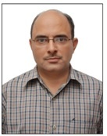

Rajesh Kumar Aggarwal (Head of Department)
Designation:Associate Professor
Qualification:PhD(NIT Kurukshetra), 2014
Area of Interest:
- Speech Processing Pattern Recognition & M/CLearning
- Soft Computing
- Stastistical Modeling
- Science & Spirituality
Phone No.: 01744-233483, 233259, 233479
Email:rka15969@gmail.com

Mayank Dave
Designation: Professor
Qualification: Ph.D (2002, IIT Roorkee), Senior Member IEEE
Area of Interest:
- System and Network Security
- Cyber Security
- Cloud Security
- Key Management
- Wireless Sensor Networks
- Underwater Sensor Networks
- Semantic Web
- Mobile Computing
Phone No.: 01744-233480
Email: mdave@nitkkr.ac.in m.dave@ieee.org
Jitender Kumar Chhabra
Designation: Professor
Qualification: M.Tech(Computer Engg) from NITK as Gold Medalist; B.Tech (Computer Engg) from NITK(earlier RECK) as 2nd Topper; PhD (S/w Engg) with 8 international journal publications from thesis.
Areas of Interest:
- Programming in C
- Object oriented programming in C++
- Data Structures
- Software Design & Development
- Software Engineering & Project Development
- Operating Systems Data Bases
- Object Oriented Systems
- Software Testing
Research Activities: Software Metrics, Software Engineering, Data Mining, Soft Computing, Algorithms & related areas
Phone No.: +91-1744-233482 (office - Direct number)
Email: jitenderchhabra@nitkkr.ac.in
Sanjay Kumar Jain
Designation:Professor
Qualification:PhD 2006 MNNIT, Allahabad
Area of Interest:
- Database design
- data models
- database schema management
- data integration
- dataspace
- conceptual modeling
- semantic web
- requirements engineering.
Research activities: To supervise and produce high quality M Tech and PhD theses in addition to B Tech projects.
Phone No.: 01744 -233490
Email:skj_nith@yahoo.com
LABARATORY
We have excellent computational facilities available for academic and research purpose. The department has its own intranet connected to the campus wide LAN .The department intranet supports several servers based on Windows 2008, Windows2003 and Linux servers. All servers are networked through switches, and about 250 nodes are connected to these servers. The department has printing and scanning facilities available to the students and staff members.
Various Laboratories
1. Computer Networks Lab.
2. Mobile Computing Lab.
3. Application & Systems Software Lab.
4. Computer Hardware & Trouble Shooting Lab.
5. Software Engg. & Web Engg. Lab.
6. Thin Client Lab.
7. Project Lab.
8. Wireless & Sensor Networks Lab.
Computational Facilities
Excellent computational facilities are available for academic and research purposes. The infrastructure in the department got strengthened during Project IMPACT and Project TEQIP. The department has its own intranet since 1994 and is connected to the campus wide LAN. The department intranet supports about 10 servers based on Windows and Linux servers which are networked through switches and about 350 nodes are connected to these servers. The department has printing and scanning facilities available to the students and staff members. There are eight laboratories for UG/PG in the department. Students work on tools, compilers, web authoring tools, DBMS, Rational Suite Enterprise, Aneka (Cloud Computing tool) and Network Simulation Tools like NetSim, Qualnet, and Image Processing Software, etc.
Hardware Facilities
Servers:
AMD Opteron Rack based -------02 Nos.
AMD Opteron Tower based -------03 Nos.
Intel Xeon Rack based -------01 Nos.
Intel Xeon Tower based -------02 Nos.
Desktop Computers:
i7 based -------200 Nos.
Core 2Duo based -------190 Nos.
Intel i3 processor based -------25 Nos.
AMD Athlon based -------35 Nos.
Intel P4 based -------70 Nos.
Total -------410 Nos.